1. La Humillación Injusta
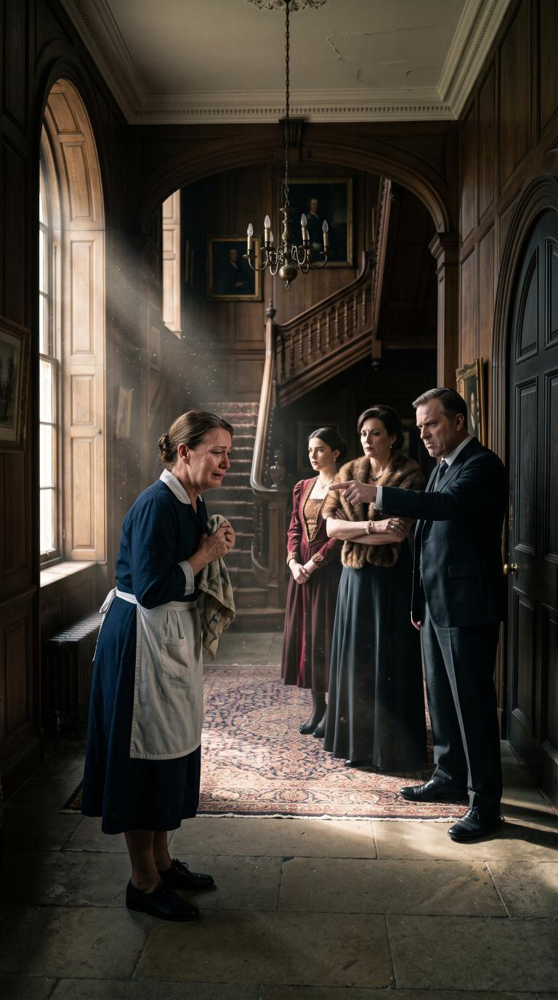
Tras tres décadas de servicio incondicional, manteniendo la mansión y cuidando de don Ricardo como si fuera su propia familia, la empleada fue llamada al gran salón. Allí, los familiares del difunto, movidos por la codicia y el desprecio, la enfrentaron con frialdad. "Ya no haces falta", le dijeron, ignorando sus lágrimas y sus años de entrega. Con un gesto de soberbia, la expulsaron de la casa como si su presencia fuera una mancha, dejándola en la calle sin un centavo y con el corazón roto.
2. El Juicio y la Presencia Inesperada
El día de la lectura del testamento, la tensión se podía cortar con un cuchillo. Los familiares, seguros de su victoria, esperaban impacientes el reparto de la inmensa fortuna. Sin embargo, la atmósfera cambió por completo cuando la empleada entró en la sala judicial. Los herederos estallaron en protestas, exigiendo al juez que la expulsara. El juez, con una calma imperturbable, golpeó su mazo y sentenció: "Silencio. Todos los implicados en este testamento deben estar presentes, y ella es una parte fundamental de la última voluntad de don Ricardo".
3. La Justicia que Triunfa
El juez comenzó a leer las palabras finales del testador. Don Ricardo detallaba cómo durante años observó el desdén y el interés materialista de sus propios parientes. El documento especificaba que, al haber sido ella quien estuvo a su lado en los momentos de enfermedad y soledad, ella sería la única heredera universal. La sala quedó sumida en un silencio sepulcral; la arrogancia de los familiares se transformó en una derrota total al darse cuenta de que, por su falta de humanidad, perdieron absolutamente todo.
La Enseñanza Final:
Este caso nos deja una lección imborrable: el poder y el dinero son pasajeros, pero la integridad y la lealtad son virtudes que finalmente reciben su recompensa. A menudo, las personas subestiman a quienes consideran "inferiores", olvidando que el respeto es la verdadera moneda de valor en la vida.
1. El disfraz
Un millonario se disfrazó de indigente para saber quién lo valoraba realmente.
2. El desprecio
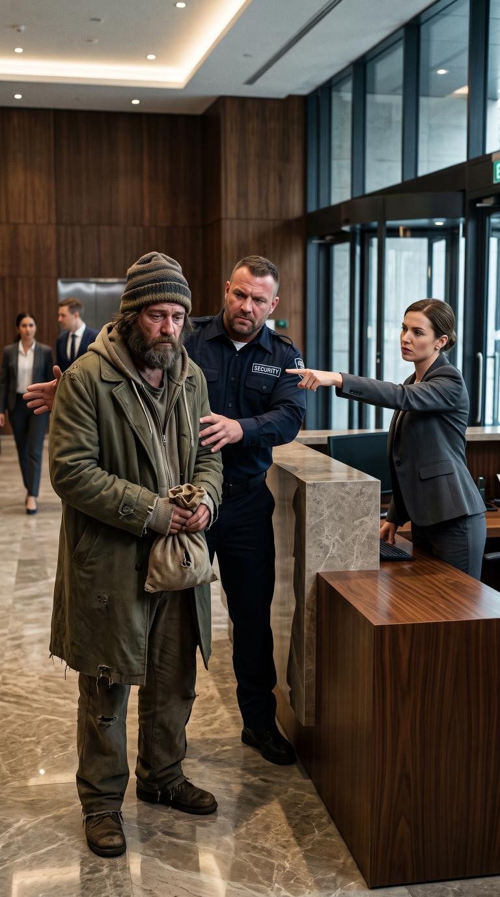
Sus supuestos amigos lo ignoraron y lo echaron de sus empresas sin reconocerlo.
3. La revelación
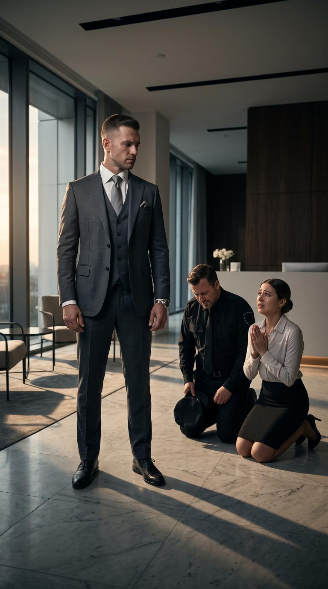
Al quitarse el disfraz, todos se arrodillaron, pero él ya sabía quiénes eran los verdaderos traidores.
Enseñanza:
No valores a nadie por su apariencia, pues la humildad es la mayor prueba de lealtad.
1. El rechazo
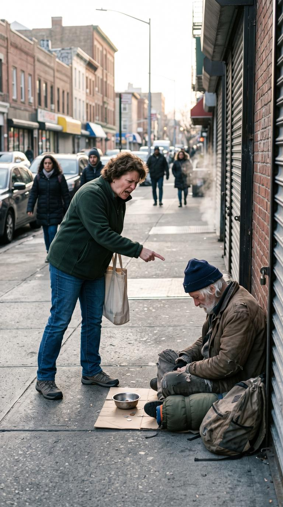
Una vecina insultaba al indigente de su calle cada mañana.
2. El desastre
Cuando un incendio destruyó su casa, el indigente pagó la reconstrucción de toda la cuadra.
3. La lección
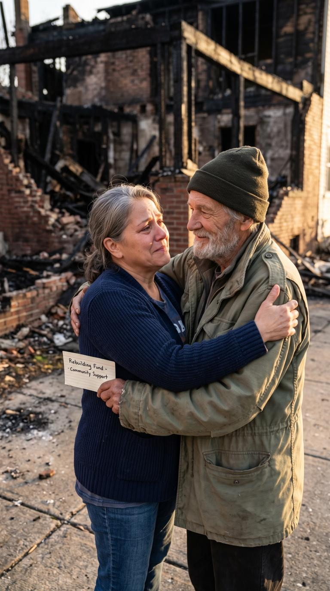
Ella comprendió que juzgar por la apariencia es un error que puede costar el respeto de quienes más nos ayudan.
Enseñanza:
La caridad y el valor humano no tienen etiquetas visibles.
1. El despido
Un ejecutivo humilló a su secretaria y la despidió injustamente por un error que él mismo provocó.
2. La crisis
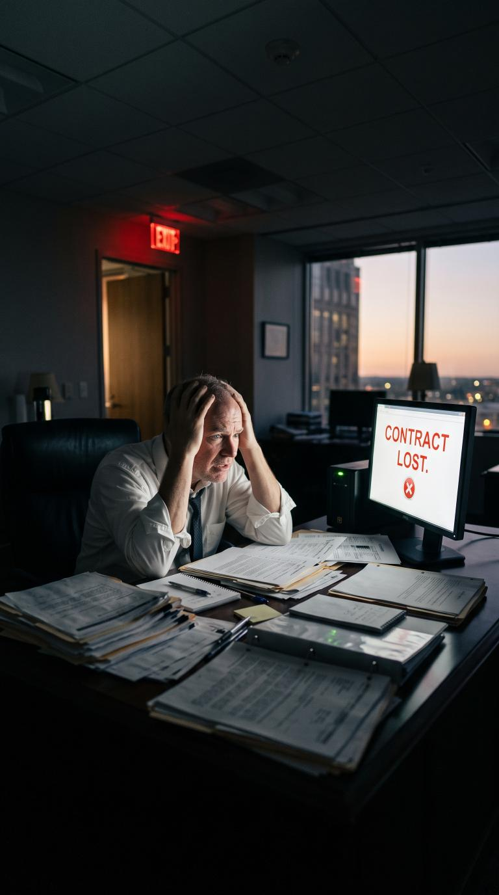
Días después, perdió un contrato millonario al no encontrar archivos clave que solo ella gestionaba.
3. La lección
Al rogarle que regresara, ella aceptó pero bajo una nueva estructura donde el respeto era innegociable.
1. Las burlas
Un niño era el blanco de burlas constantes por sus ropas humildes, a pesar de su brillantez.
2. La salvación
Cuando la escuela enfrentó una quiebra técnica, él resolvió el problema informático que los expertos no pudieron.
3. El cambio
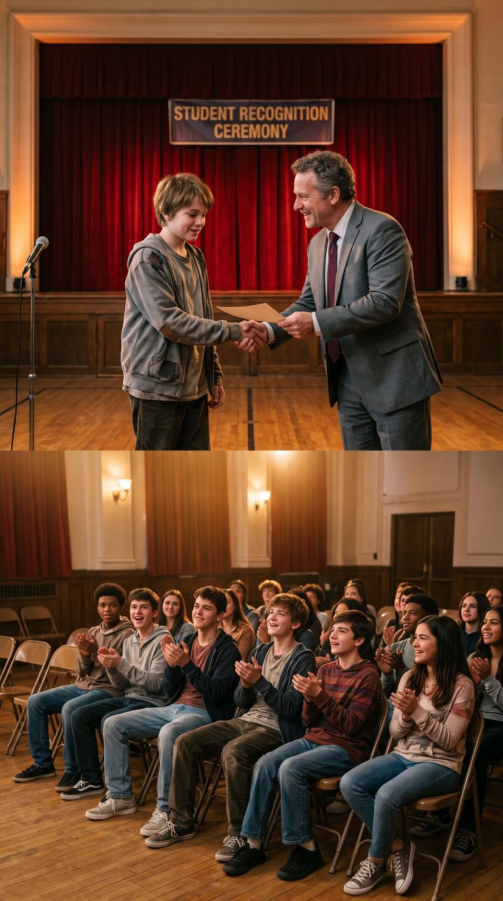
Todos reconocieron su valor, aprendiendo que la inteligencia y la bondad no dependen del dinero.
1. La pelea
Una pareja discutía agresivamente por dinero en un restaurante, causando incomodidad a los comensales.
2. El consejo
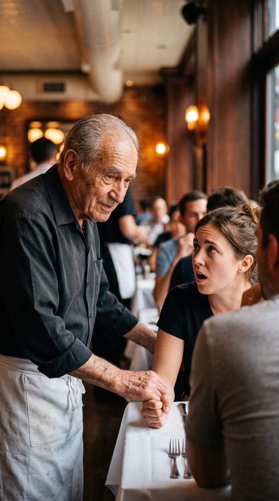
Un mesero anciano se acercó y, con una frase sobre la brevedad de la vida, les hizo reflexionar.
3. La paz
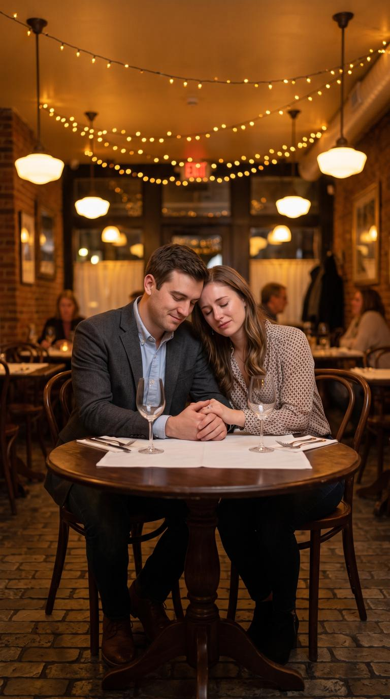
La pareja se reconcilió, dándose cuenta de que ninguna suma de dinero vale la paz en una relación.
1. El desdén
Un empresario arrogante tiró a la basura la carta de un pequeño proveedor sin siquiera leerla.
2. El error
Ese proveedor terminó siendo clave para un proyecto millonario que su competencia logró cerrar.
3. El aprendizaje
Aprendió que en los negocios, el respeto a todos es la base de las mejores oportunidades.
1. El retorno
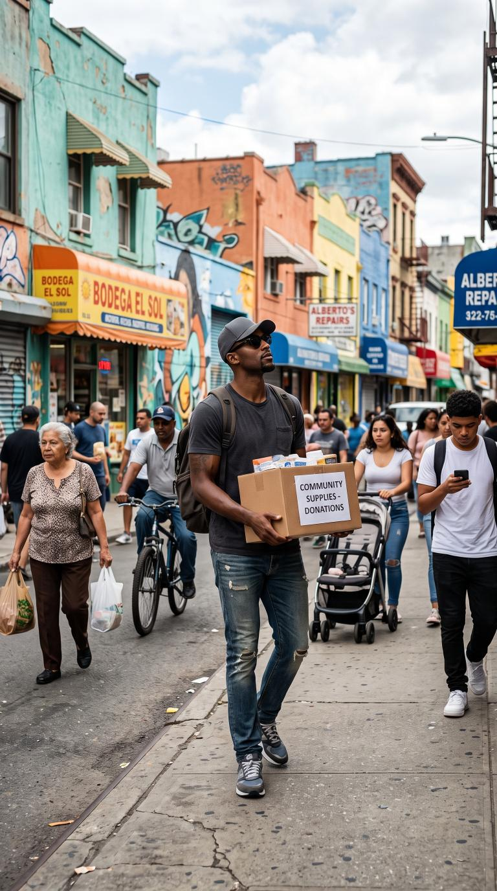
Un famoso deportista volvió a su barrio humilde buscando ayuda para una causa benéfica.
2. El rechazo
Nadie lo reconoció bajo su gorra; todos le cerraron las puertas ignorando quién era realmente.
3. La revelación
Al día siguiente, cuando se supo su identidad, el arrepentimiento del pueblo fue profundo y masivo.
1. El acto
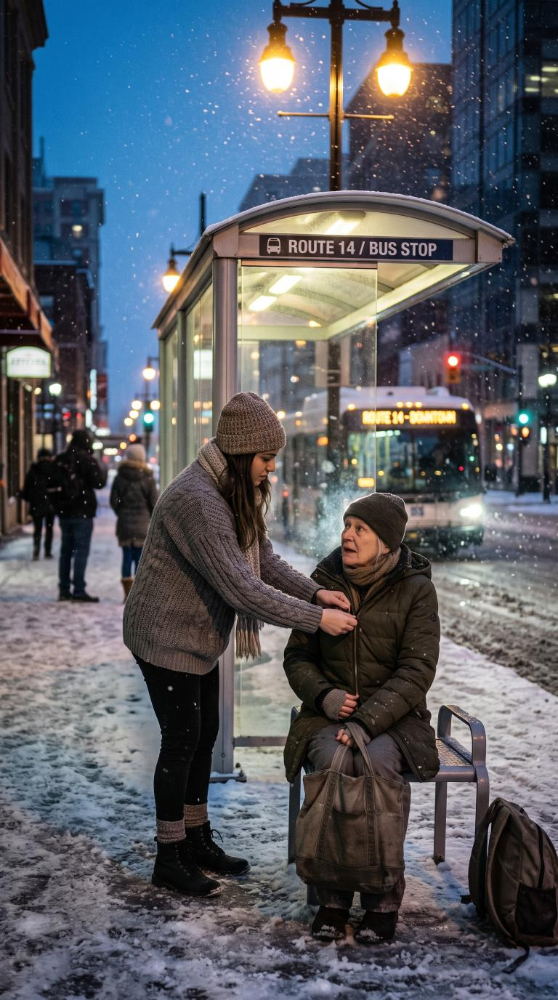
Una mujer, a pesar de tener poco, donó su único abrigo a una desconocida que temblaba de frío en la parada.
2. La sorpresa
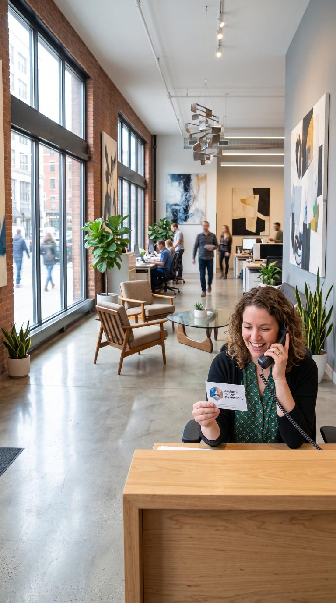
Esa misma noche, recibió una llamada de trabajo inesperada gracias a alguien que observó su bondad.
3. La enseñanza
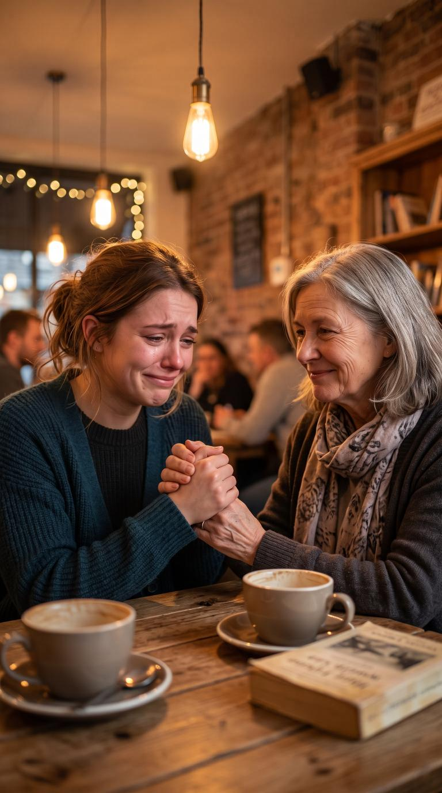
Aprendió que la generosidad no vacía tus manos, sino que abre puertas que ni sabías que existían.
1. El hallazgo
Un hombre encontró una cartera llena de dinero en efectivo y documentos importantes.
2. La decisión
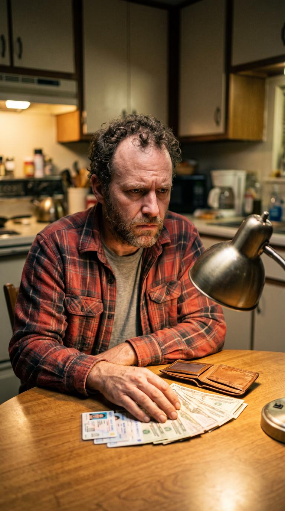
Aunque necesitaba el dinero, decidió buscar al dueño, quien resultó ser un padre desesperado por una medicina.
3. El resultado
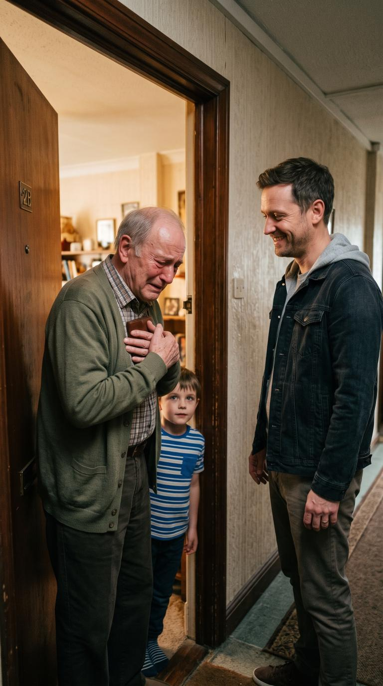
La recompensa no fue económica, sino la inmensa gratitud y una amistad que le cambió la vida.
1. La ambición
Un hermano eligió el camino del poder rápido y sin escrúpulos, mientras el otro prefirió la honestidad.
2. El tiempo
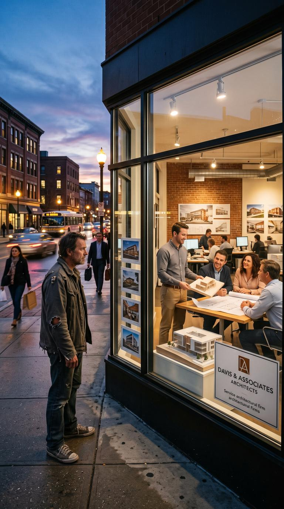
Con el paso de los años, el primero perdió todo por sus engaños, mientras el segundo construyó una vida sólida.
3. El cierre
La conclusión fue clara: la integridad es la inversión que siempre da los mejores dividendos.
1. El insulto
Un cliente gritó y humilló a una cajera por una demora técnica que ella no podía controlar.
2. La sorpresa
El dueño de la cadena, presente como incógnito, intervino y expulsó al cliente permanentemente.
3. La lección
Demostró que el respeto hacia los empleados es una regla de oro en cualquier establecimiento serio.
1. El hábito
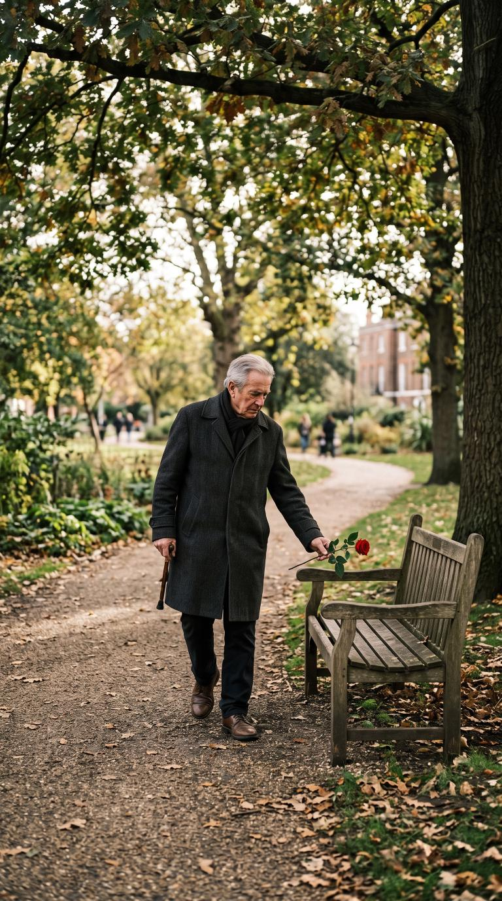
Un anciano visitaba el parque cada día para dejar una flor en una banca solitaria.
2. El misterio
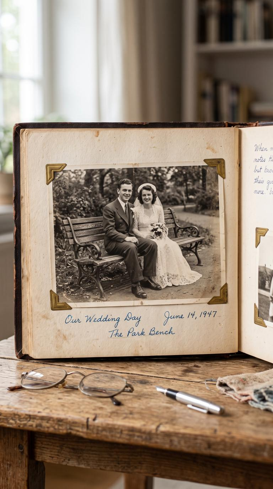
Se descubrió que allí conoció a su esposa hace 60 años; un acto de memoria viviente.
3. El valor
Esa fidelidad inspiró a todo el pueblo a valorar más a sus seres queridos mientras están presentes.
1. La indiferencia
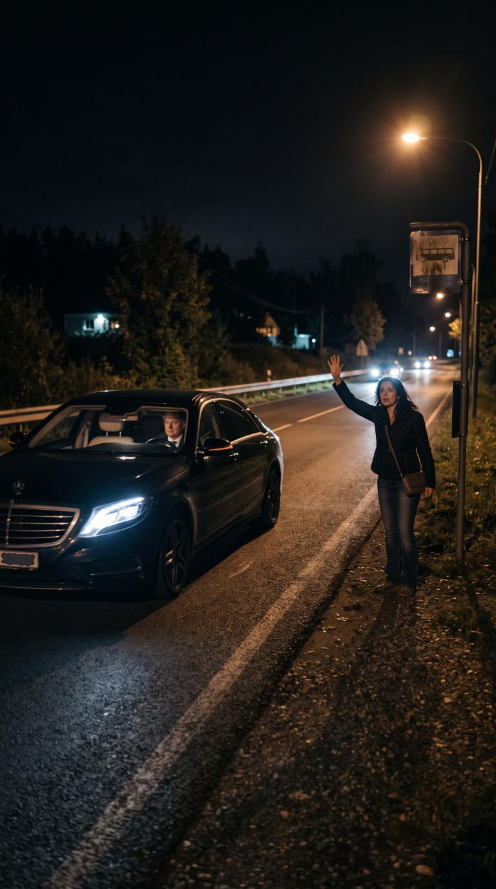
Un conductor ignoró los pedidos de auxilio de una mujer varada en la carretera por un neumático ponchado.
2. El karma
Kilómetros más adelante, su auto se quedó sin gasolina en un tramo oscuro y solitario.
3. La lección
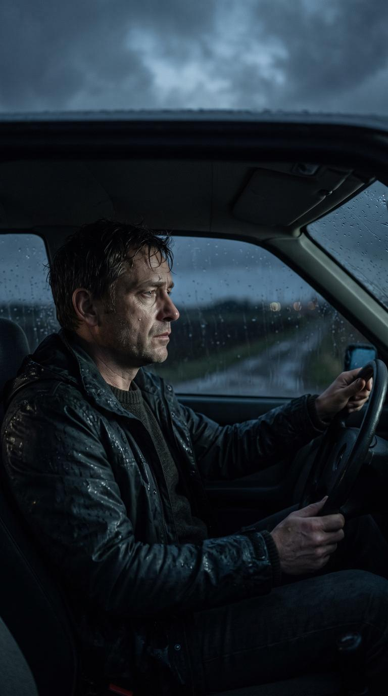
Comprendió que la vida siempre nos pone en el lugar de quienes un día decidimos ignorar.
1. El sacrificio
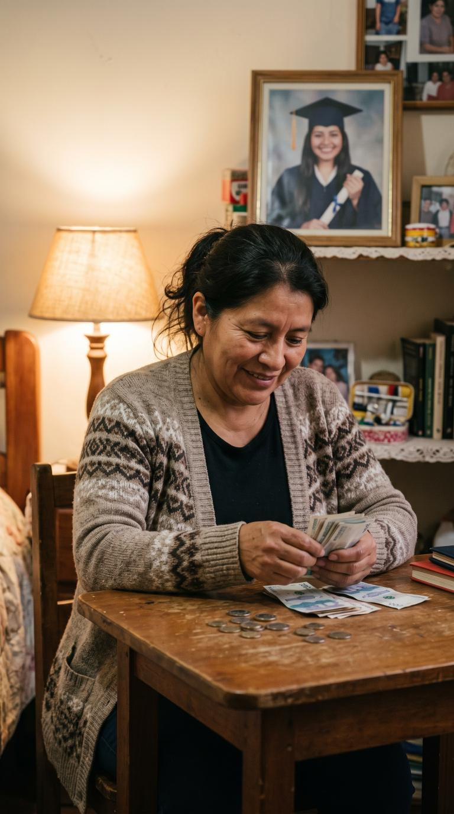
Una empleada doméstica ahorró durante años sin que sus jefes supieran, solo para pagar la universidad de su hija.
2. El descubrimiento
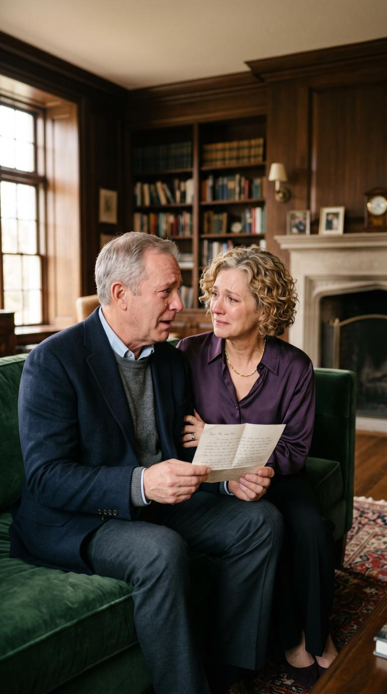
Al enterarse, los padres de la joven quedaron impactados por tal nivel de amor incondicional.
3. La gratitud
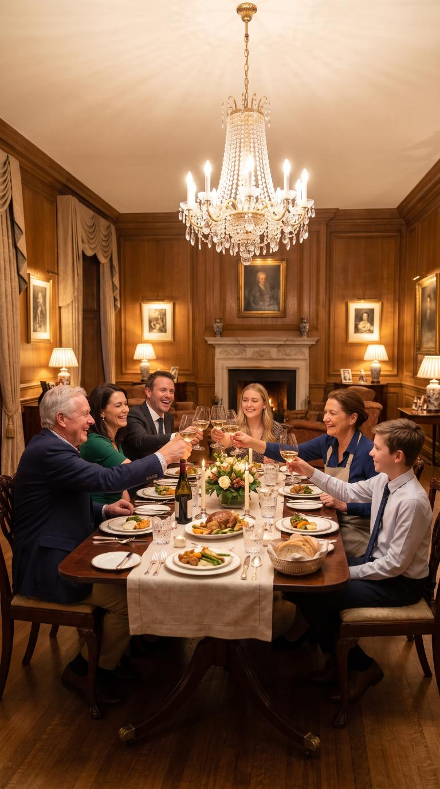
La trataron desde entonces no como una empleada, sino como un miembro fundamental de su propia familia.
1. La burla
Un joven arrogante se rio de un músico callejero que tocaba cerca de un conservatorio famoso.
2. El choque
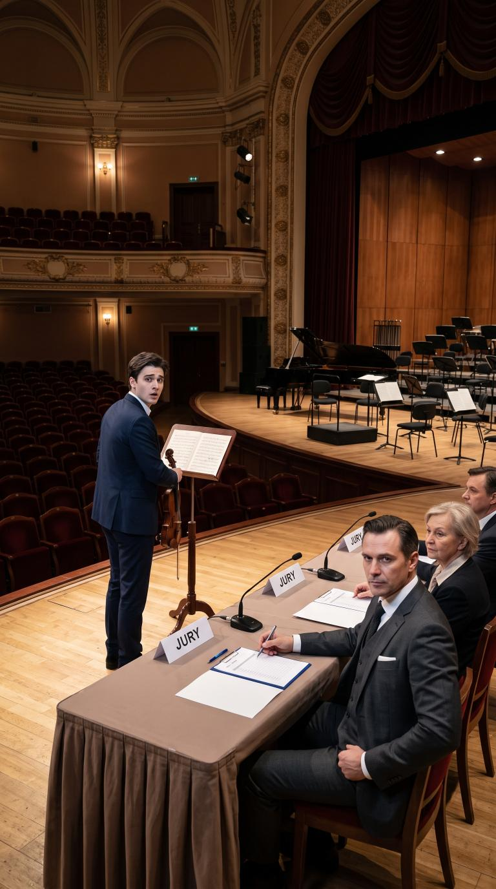
Para su sorpresa, el músico era un maestro invitado que debía evaluar su examen de ingreso.
3. La humildad
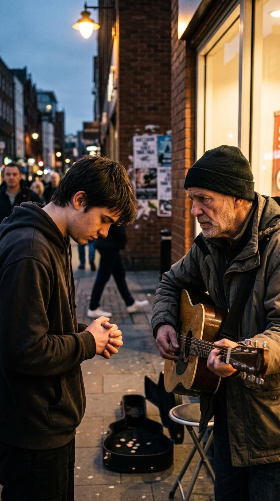
El joven aprendió que el talento a veces se esconde bajo ropas sencillas y mucha modestia.
1. El funeral
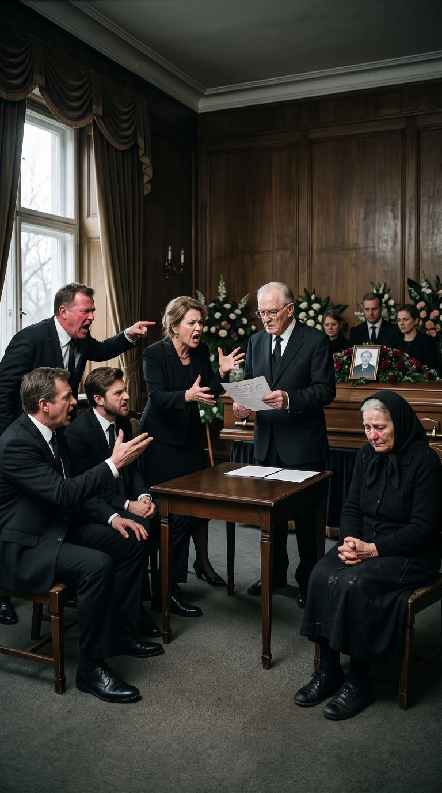
Los parientes esperaban el testamento, pero la fortuna fue para un vecino que cuidó al difunto en sus últimos días.
2. La furia
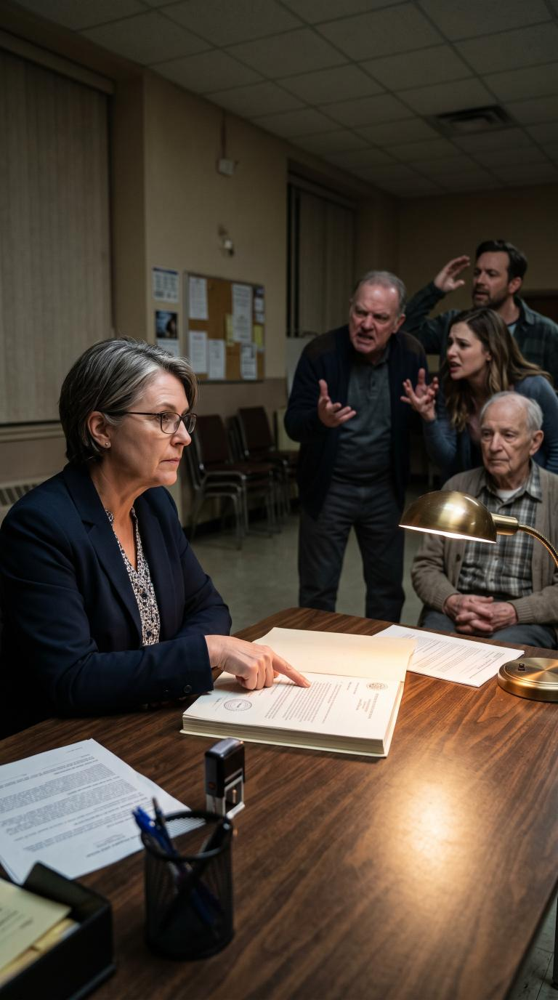
Los familiares protestaron, pero el notario dejó claro que la herencia es un premio a quien brindó compañía.
3. El legado
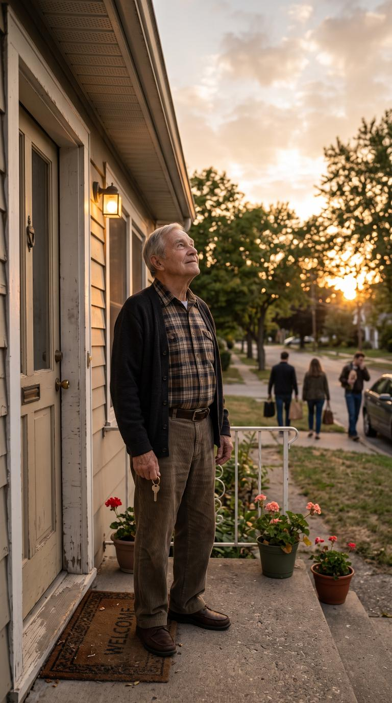
Se demostró que el tiempo compartido es más valioso que cualquier vínculo de sangre por interés.
1. La caída
Un hombre obsesionado con el dinero perdió todo en una mala inversión y terminó durmiendo en la calle.
2. La visión
Desde la acera, vio la vida con otra perspectiva y comprendió que el dinero no era su seguridad.
3. El renacer
Reconstruyó su vida desde cero, priorizando las relaciones humanas sobre las cuentas bancarias.